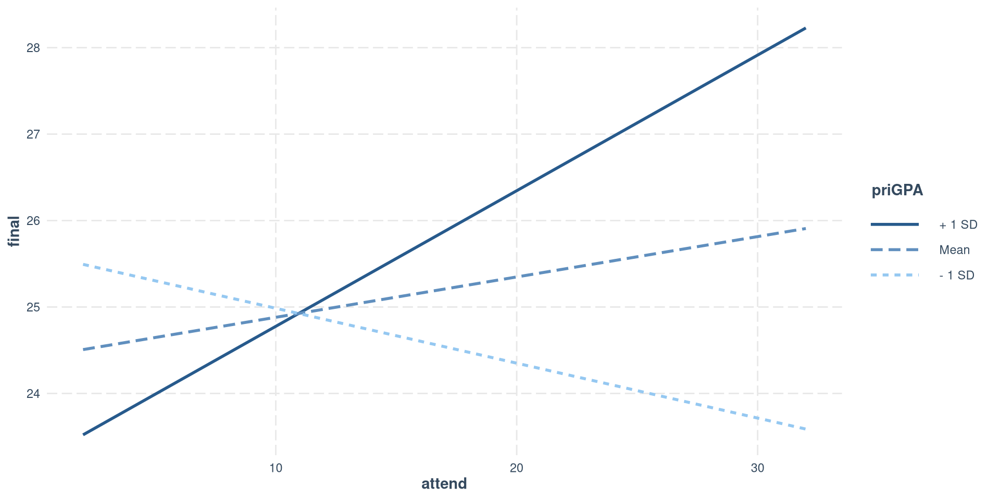

Lab 12: Third Variables
Fabio Setti
PSYC 6802 - Introduction to Psychology Statistics
Today’s Packages and Data 🤗
The lavaan package (Rosseel et al., 2024) is the most popular package to run SEM models in R. We will use it to run mediation analysis, which the SEM framework accommodates nicely.
The semTools package (Jorgensen et al., 2025) offers some helper functions that build upon lavaan. We will use it to compute monte carlo confidence intervals for indirect effects.
The interactions package (Long, 2024) provides helpful functions to explore interaction effects.
Today we will use the attend dataset from the wooldrige package (Shea & Brown, 2024). See here for more information about the data.
Moderation = Interactions
To start off, there is absolutely no difference between moderation and interactions, which we have looked at in Lab 8. This is a case where people use different words to refer to the same thing.
If we have two predictors \(X_1\) and \(X_2\) and we believe that the effect that they have on \(Y\) is fundamentally tied together, the we say that there is an interaction between \(X_1\) and \(X_2\). The regression equation to describe this is:
\[ Y = \beta_0 + \beta_1X_1 + \beta_2X_2 + \beta_3(X_1 \times X_2) \]
For example, if we look at individuals how have \(X_2 = 1\), we get the equation on the right.
Note that we get a unique regression equation for individuals who have \(X_2 = 1\), where \((\beta_0 + \beta_2)\) is the intercept and \((\beta_1 + \beta_3)\) the slope.
\[ Y = \beta_0 + \beta_1X_1 + \beta_2 \times 1 + \beta_3(X_1 \times 1) = \]
\[ \beta_0 + \beta_1X_1 + \beta_2 + \beta_3X_1 = \]
\[ Y = (\beta_0 + \beta_2) + (\beta_1 + \beta_3)\times X_1 \]
The regression coefficient \(\beta_3\) is the interaction effect between \(X_1\) and \(X_2\). Some call this moderation analysis, I personally prefer to say that we think that there is an interaction effect between \(X_1\) and \(X_2\) 🤷
Which Variable is the moderator?
When hypothesizing interaction effects, it is useful to make a distinction between a focal predictor and a moderator. For example, if you are interesting in exploring how race (\(X_2\)) affects the impact of cognitive behavioral therapy (CBT) (\(X_1\)) on depression (\(Y\)), then I would say that race is more easily understood as the moderator and CBT as the focal predictor.
Interactions are usually represented with the diagrams on the right. the variable pointing directly to \(Y\) is considered the focal predictor, while the variable pointing to the line is considered the moderator.
The two representation on the right are equivalent (the regression equation is the same). However, depending on your hypotheses it may make more practical sense to conceptualize one variables as the focal predictor and the other as the moderator.

Moderation in R
We hypothesize that the grade on a statistics final (
final, \(Y\)) is predicted by how many classes a student attends (attend, \(X_1\)). Additionally, we also think that the effect that attend has on final is moderated by prior GPA before starting the class (priGPA, \(X_2\)).
Call:
lm(formula = final ~ attend * priGPA, data = dat)
Residuals:
Min 1Q Median 3Q Max
-16.4387 -2.8093 -0.2672 3.0143 11.3030
Coefficients:
Estimate Std. Error t value Pr(>|t|)
(Intercept) 30.14293 3.66576 8.223 1.02e-15 ***
attend -0.47663 0.13773 -3.461 0.000573 ***
priGPA -2.21470 1.62020 -1.367 0.172101
attend:priGPA 0.20231 0.05878 3.441 0.000614 ***
---
Signif. codes: 0 '***' 0.001 '**' 0.01 '*' 0.05 '.' 0.1 ' ' 1
Residual standard error: 4.354 on 676 degrees of freedom
Multiple R-squared: 0.1491, Adjusted R-squared: 0.1454
F-statistic: 39.5 on 3 and 676 DF, p-value: < 2.2e-16To specify an interaction we use the * operator. Our regression equation is:
\[ Y = 30. 14 - 0.48X_1 - 2.21X_2 + 0.20 X_1 X_2 \]
Our interaction term is significantly different from 0. The intercept, \(30.14\), is still the expected value of \(Y\) when \(X_1 = 0\) and \(X_2 = 0\)…
However, now that we are dealing with a significant interaction effect, \(0.20 X_1 X_2\), things are not so simple! Just as in Lab 8, we need to look at simple slopes.
Simple Slopes
Because the interaction term is significant, the effect of our focal predictor depends on the value of the moderator. We can use the sim_slopes() function from the interactions package.
Value of priGPA Est. S.E. 2.5% 97.5% t val. p
1 2.042 -0.064 0.036 -0.135 0.008 -1.742 0.082
2 2.587 0.047 0.039 -0.029 0.123 1.209 0.227
3 3.131 0.157 0.061 0.037 0.276 2.577 0.010Here, I am treating prior GPA before taking the course, priGPA, as the moderator. The sim_slopes() function will calculate the simple slope of the focal predictor attend given some values of priGPA. The sim_slopes() function automatically chooses the mean of the moderator and 1 SD below/above the mean of the moderator as values.
when prior GPA \(= 2.042\) → slope of attend \(= -0.064\)
when prior GPA \(= 2.587\) → slope of attend \(= 0.047\)
when prior GPA \(= 3.131\) → slope of attend \(= 0.157\)
The simple slopes are under the est. column. Notice that the simple slope of attend is significant only when GPA \(= 3.131\). What does this mean?
Plotting simple slopes
We can use the interact_plot() function from the interactions to plot the simple slopes that we just calculated.
Once again, in modx = we specify the variable that we want to treat as the moderator, and in pred = we specify the variable that we want to treat as the focal predictor.

Only the slope of the regression line when priGPA is 1 SD above the mean is significantly different from 0. S, there is a positive relation between final grade and class attendance only for students who have a relatively high prior GPA.
Mean-Centering
From some slides ago, we got that our current regression equation is
\[ Y = 30. 14 - 0.48X_1 - 2.21X_2 + 0.20 X_1 X_2 \]
Where \(Y =\) final, \(X_1 =\) attend and \(X_2 =\) priGPA Currently, the interpretation of the slopes of \(X_1\) and \(X_2\) is not very useful because:
- \(- 0.48\) is the slope of
attendonfinal, whenpriGPAis \(0\) (impossible, no one has a GPA of \(0\)).
- \(- 2.21\) is the slope of
priGPAonfinal, whenattendis \(0\) (really unlikely that someone would attend \(0\) classes).
We can mean-center all of our predictors such that \(0\) becomes the mean! We have seen this in Lab 6. Note that standardizing does the same thing, and is probably better because it also puts the predictors on the same scale.
Mean-centered Regression
Call:
lm(formula = final ~ attend_cnt * priGPA_cnt, data = dat)
Residuals:
Min 1Q Median 3Q Max
-16.4387 -2.8093 -0.2672 3.0143 11.3030
Coefficients:
Estimate Std. Error t value Pr(>|t|)
(Intercept) 25.63475 0.18284 140.202 < 2e-16 ***
attend_cnt 0.04669 0.03863 1.209 0.227255
priGPA_cnt 3.07500 0.34254 8.977 < 2e-16 ***
attend_cnt:priGPA_cnt 0.20231 0.05878 3.441 0.000614 ***
---
Signif. codes: 0 '***' 0.001 '**' 0.01 '*' 0.05 '.' 0.1 ' ' 1
Residual standard error: 4.354 on 676 degrees of freedom
Multiple R-squared: 0.1491, Adjusted R-squared: 0.1454
F-statistic: 39.5 on 3 and 676 DF, p-value: < 2.2e-16The regression is now
\[ Y = 25. 63 + 0.05X_1 + 3.07X_2 + 0.20 X_1 X_2 \]
Notice that the interaction terms is the exact same, but the slope of both attend and priGPA are now positive (as they should be).
\(0.05\) is the slope of
attendonfinal, whenpriGPAis \(0\), which is now the mean ofpriGPA.\(3.07\) is the slope of
priGPAonfinal, whenattendis \(0\), also the mean ofattendnow.
I am skipping over a lot of interpretation and context that you can find in Lab 9 of PSYC 7804 - Regression With Lab.
Mediation
If we hypothesize that a casual sequence exists among our variables, we test this hypothesis with mediation analysis.
The first diagram to the right describes a regression of \(Y\) predicting \(X\). It is helpful to name the paths when talking about mediation, so \(c\) represents the slope between \(X\) and \(Y\).
If we further hypothesize that an intermediate variable, \(M\), exists such that \(X\) causes \(M\), and \(M\) causes \(Y\), we get the second diagram on the right.
Importantly, you should see that arrowheads reach two boxes in the mediation diagram. This means that the mediation diagram implies 2 separate regressions:
M ~ XY ~ X + M
This means that \(X\) can influence \(Y\) directly through the \(c'\) path, but also indirectly by influencing \(M\) through the \(a\) path, and subsequently getting to \(X\) through the \(b\) path.
Running a regression in lavaan
We will use lavaan for mediation analysis. Because of its flexibility, lavaan’s models require a specific syntax.
lm()
Call:
lm(formula = final ~ termgpa, data = dat)
Residuals:
Min 1Q Median 3Q Max
-15.7368 -2.6878 -0.0022 2.8061 11.5160
Coefficients:
Estimate Std. Error t value Pr(>|t|)
(Intercept) 17.3992 0.5707 30.48 <2e-16 ***
termgpa 3.2649 0.2111 15.46 <2e-16 ***
---
Signif. codes: 0 '***' 0.001 '**' 0.01 '*' 0.05 '.' 0.1 ' ' 1
Residual standard error: 4.053 on 678 degrees of freedom
Multiple R-squared: 0.2607, Adjusted R-squared: 0.2596
F-statistic: 239.1 on 1 and 678 DF, p-value: < 2.2e-16lavaan
First, we need to specify the model as a character. The syntax is similar to lm():
Then, we run the model with the sem() function. the second argument is going to be our data:
lhs op rhs est ci.lower ci.upper
1 final ~ termgpa 3.265 2.852 3.678
The slope, \(3.265\) is the exact same in both cases.
A Mediation Model
Let’s say we believe that student ACT (\(X\)) score predicts grade on the final (\(Y\)). HOwever, we think that the relation between ACT and final is mediated by the GPA for that specific term, termgpa (\(M\)).
So the regression coefficients for the paths are:
Note that running two separate regression with lm() would give the exact same result.
This graph implies these 2 regressions:
temrgpa ~ ACTfinal ~ ACT + termgpa
Direct and Indirect Effects
When running mediation analysis, usually we care about the direct, indirect, and total effect (see here to understand what they are). We know that:
- indirect effect \(= a \times b\), which is equivalent to \(c - c'\)
- direct effect \(= c'\), which is equivalent to \(c - a \times b\)
- total effect \(= c\), which is equivalent to \(c' + a \times b\)
We can specify all these calculations in the lavaan model.
- We use the
*operator to label the regression coefficients - We define new element with the
:=operator. This will do some math operation with labeled values.
You will see that both the indirect and direct values that we define will now be in the output.
lhs op rhs label est ci.lower ci.upper
1 termgpa ~ ACT a 0.052 0.036 0.067
2 final ~ ACT c_p 0.339 0.252 0.425
3 final ~ termgpa b 2.871 2.462 3.280
4 indirect := a*b indirect 0.149 0.100 0.198
5 total := c_p+a*b total 0.487 0.393 0.582Confidence Intervals for Indirect Effects
Testing whether the indirect effect is significantly different from 0 requires computing different confidence intervals than the ones in the normal lavaan output because of reasons.
Here I show one quick way if doing this with the monteCarloCI() from the semTools package. The function will create 95% CIs for all the elements created with :=.
est ci.lower ci.upper
indirect 0.149 0.101 0.200
total 0.487 0.392 0.581The confidence intervals for the indirect effect are slightly different (almost the same) from the previous slide.
As a disclaimer, I am skipping A LOT of information and context about both moderation and mediation (which have absolutely nothing to do with each other by the way). Once again, you can find a much more detailed treatment of both in the PYSC 7804 - Regression with Lab materials:
References
Jorgensen, T. D., Pornprasertmanit, S., Schoemann, A. M., Rosseel, Y., Miller, P., Quick, C., Garnier-Villarreal, M., Selig, J., Boulton, A., Preacher, K., Coffman, D., Rhemtulla, M., Robitzsch, A., Enders, C., Arslan, R., Clinton, B., Panko, P., Merkle, E., Chesnut, S., … Vanbrabant, L. (2025). semTools: Useful Tools for Structural Equation Modeling.
Long, J. A. (2024). Interactions: Comprehensive, User-Friendly Toolkit for Probing Interactions.
Rosseel, Y., Jorgensen, T. D., Wilde, L. D., Oberski, D., Byrnes, J., Vanbrabant, L., Savalei, V., Merkle, E., Hallquist, M., Rhemtulla, M., Katsikatsou, M., Barendse, M., Rockwood, N., Scharf, F., Du, H., Jamil, H., & Classe, F. (2024). Lavaan: Latent Variable Analysis.
Shea, J. M., & Brown, K. H. (2024). Wooldridge: 115 Data Sets from "Introductory Econometrics: A Modern Approach, 7e" by Jeffrey M. Wooldridge.
PSYC 6802 - Lab 12: Third Variables